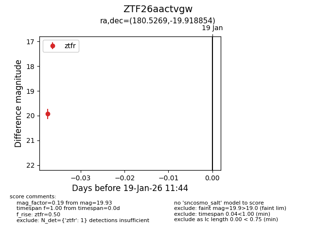
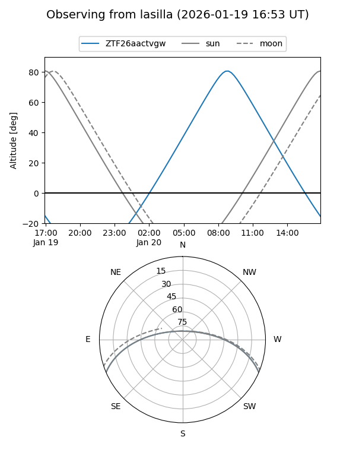
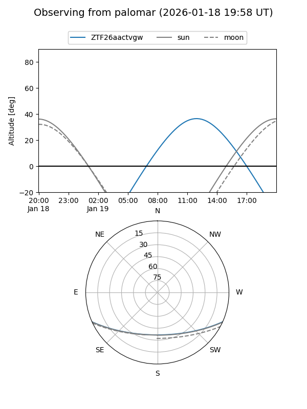

ZTF26aactvgw
Target ZTF26aactvgw at 2026-01-19 11:46
Aliases and brokers:
FINK: link
Lasair: link
ALeRCE: link
alt names
ZTF26aactvgw (ztf,fink_ztf)
Coordinates:
equatorial (ra, dec) = 180.5269,-19.91885
equatorial (HMS+DMS) = 12:02:06.45,-19:55:07.87
galactic (l, b) = (287.3896,+41.45934)
Flags:
Photometry:
last ztfr=19.93
1 ztfr detections
Lightcurve

Visibility


Additional plots